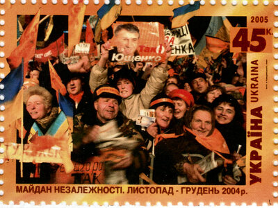

Основним результатом революції було призначення Верховним судом повторного другого туру президентських виборів (не передбаченого прямо законодавством).
Внаслідок компромісу, досягнутого фракціями Верховної Ради, після призначення повторного другого туру виборів були прийняті зміни до Конституції, які отримали назву Конституційна реформа 2004.
Див. також: Закон України «Про внесення змін до Конституції України» (2004)
Конституційна реформа зменшила повноваження президента, і, таким чином, знизила рівень значущості спірних президентських виборів.
Для захисту своїх демократичних прав до Києва приїхало сотні тисяч людей зі всієї України
Хід подій
-
21 листопада
- 21 листопада вечор
- 22 листопада
-
23 листопада
- 23 листопада вечор
- 24 листопада
- 25 листопада
Дівчина прикрашає щити співробітників міліції квітами під час Помаранчевої революції у Києві.
Характеристика революції
Фінансування
Учасники та стратегія
Деякі аналітики вважають, що Помаранчева революція була побудована за схемою, вперше розробленою під час вигнання Слободана Мілошевича в Сербії чотири роки тому, і продовжуючи Революцію троянд у Грузії. Кожна з цих перемог була результатом великих кампаній на низовому рівні та створення коаліцій серед опозиції. Після перемоги владних партій розпочалися публічні демонстрації, щоб не дозволити чинним урядовцям утриматися при владі шляхом фальсифікації виборів.
Кожен з цих суспільних рухів включав велику роботу студентів-активістів. Найвідомішим з них був молодіжний рух Отпор! Голова грузинського парламентського комітету з оборони та безпеки Гіві Таргамадзе, колишній член грузинського Інституту Свободи, а також деякі члени «Кмара», проконсультували українських лідерів опозиції про методи ненасильницької боротьби. Представники «Отпору!» та «Кмари» навчали активістів майбутнього руху «Пора!» (чорного). Також у 2004 році утворилась організація «Пора!» (жовта). Обидві громадянські кампанії брали активну участь у Помаранчевій революції та подіям, що їй передували.[5] Також у цих подіях брав участь громадянський рух «Чиста Україна».
Помаранчева революція та мистецтво
Помаранчева революція та подальші події викликали цілий вибух творчої активності серед українських митців. У 2004—2006 роках з'явилася ціла низка творів у різних видах і жанрах мистецтва, так чи інакше присвячених подіям або персоналіям помаранчевої революції. Значна частина таких творів має сатиричний характер, причому об'єктом сатири стали як лідери біло-блакитного табору, так, пізніше, і самі лідери Помаранчевої революції.
Художники, які брали активу участь у подіях, заснували групу Р. Е. П.(Революційний Експериментальний Простір). До її складу входили: Микита Кадан, Анатолій Бєлов, Ксенія Гнилицька, Жанна Кадирова, Володимир Кузнєцов, Ярослав Коломійчук, Лада Наконечна, Леся Хоменко, Артур Бєлозьоров, Саша Макарська, Віктор Харкевич, Леся Целованська, Володимир Щербак, Аліна Якубенко, Кирило Гриньов.[16]
- Ален Гіймоль «Навіть сніг був помаранчевим. Українська революція». У книзі, зокрема, опублікував свої роботи фотохудожник Кирило Горішний.
- Жерар де Вільє «Вбити Ющенка» (детектив)
- Михайло Слабошпицький «Пейзаж для Помаранчевої революції»
- Гліб Вишеславський, Петро Осадчук «Майдан свободи», фотоальбом, Оранта, Київ, 2005.
- Данило Яневський. «Хроніка „помаранчевої“ революції» — детальна хронологія подій з 10 жовтня 2004 по 23 січня 2005.
- Олександр Куманський, Тетяна Логуш (упорядники). «Українці перемагають сміючись» — збірник жартів на тему подій 2004 року
- Оксана Забужко «Let my people go»
- Євген Кушнарьов «Кінь рудий. Нотатки контрреволюціонера» (в оригіналі — рос. Конь рыжий. Записки контрреволюционера)